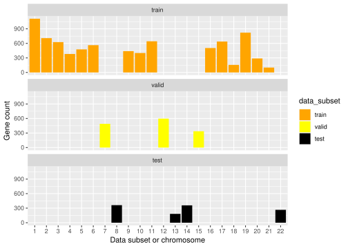
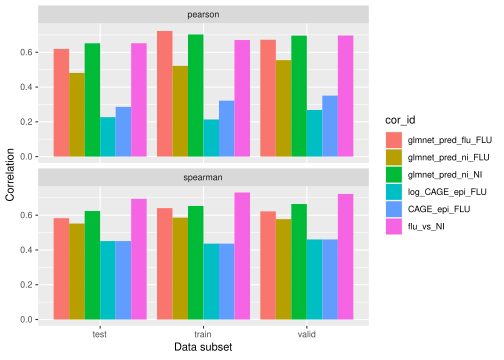

Code
library(tidyverse)
library(httpgd)
library(glmnet)
library(glue)
library(data.table)
library(dplyr)
library(ggplot2)
library(patchwork)
library(reshape2)
library(stringr)library(tidyverse)
library(httpgd)
library(glmnet)
library(glue)
library(data.table)
library(dplyr)
library(ggplot2)
library(patchwork)
library(reshape2)
library(stringr)collect_all_records <- function(data_subset, gene_metadata, X_path, y_path_flu, y_path_ni, glmnet_model_path_flu, glmnet_model_path_ni) {
print(glue("********* Collecting data records for data subset: {data_subset}"))
X <- as.matrix(read.table(X_path, row.names = 1))
X <- X[order(row.names(X)),]
y_flu <- as.data.frame(read.table(y_path_flu, row.names = 1))
y_flu$temp <- 1
y_flu <- y_flu[rownames(X),]
y_flu$temp <- NULL
y_ni <- as.data.frame(read.table(y_path_ni, row.names = 1))
y_ni$temp <- 1
y_ni <- y_ni[rownames(X),]
y_ni$temp <- NULL
print(dim(X))
glmnet_model_flu <- readRDS(glmnet_model_path_flu)
glmnet_predictions_flu <- as.numeric(predict(glmnet_model_flu, X, s = "lambda.min", type="response"))
glmnet_model_ni <- readRDS(glmnet_model_path_ni)
glmnet_predictions_ni <- as.numeric(predict(glmnet_model_ni, X, s = "lambda.min", type="response"))
cur_metadata <- gene_metadata[rownames(y_flu),]
return_df <- data.frame(data_subset= data_subset, glmnet_pred_flu=glmnet_predictions_flu, glmnet_pred_ni=glmnet_predictions_ni, true_exp_flu = as.numeric(y_flu[,1]),true_exp_ni = as.numeric(y_ni[,1]), CAGE_epi = as.numeric(X[,4766]), ensembl_id = cur_metadata[["ensembl_gene_id"]], external_gene_name = cur_metadata[["external_gene_name"]], region = cur_metadata[["target_regions"]], chroms = cur_metadata[["chromosome_name"]])
return(return_df)
}gene_annotation_file <- "/beagle3/haky/users/saideep/github_repos/Daily-Blog-Sai/posts/2023-11-21-aracena_predixcan/canonical_TSS_full_metadata.txt"
gene_annotation_table <- read.delim(gene_annotation_file, header = TRUE, sep=",")
rownames(gene_annotation_table) <- gene_annotation_table$ensembl_gene_idglmnet_model_path_flu <- "/beagle3/haky/users/saideep/projects/aracena_modeling/elastic_net/trained_eln_RNAseq_Flu_normalized_covariates.linear.rds"
glmnet_model_path_ni <- "/beagle3/haky/users/saideep/projects/aracena_modeling/elastic_net/trained_eln_RNAseq_NI_normalized_covariates.linear.rds"
all_records_df_store <- list()
c=1
for (data_subset in c("train","test", "valid")){
X_path <- glue("/beagle3/haky/users/saideep/projects/aracena_modeling/aracena_predixcan/{data_subset}_epigenome.txt")
y_path_flu <- glue("/beagle3/haky/users/saideep/projects/aracena_modeling/aracena_predixcan/{data_subset}_Flu_aracena.txt")
y_path_ni <- glue("/beagle3/haky/users/saideep/projects/aracena_modeling/aracena_predixcan/{data_subset}_NI_aracena.txt")
all_records_df_store[[c]] <- collect_all_records(data_subset, gene_annotation_table, X_path, y_path_flu, y_path_ni, glmnet_model_path_flu, glmnet_model_path_ni)
c=c+1
}********* Collecting data records for data subset: train
[1] 7855 5313
********* Collecting data records for data subset: test
[1] 1167 5313
********* Collecting data records for data subset: valid
[1] 1789 5313full_df <- do.call(rbind, all_records_df_store)
full_df <- full_df[!rowSums(is.na(full_df)) > 0,]
full_df$data_subset <- factor(full_df$data_subset, levels = c("train", "valid", "test"))
full_df$chroms <- factor(full_df$chroms, levels = c("all", "1", "2", "3", "4", "5", "6", "7", "8", "9", "10", "11", "12", "13", "14", "15", "16", "17", "18", "19", "20", "21", "22", "X", "Y"))
full_df$log_CAGE_epi <- log2(full_df$CAGE_epi)full_df_train <- full_df[full_df$data_subset == "train",]
full_df_valid <- full_df[full_df$data_subset == "valid",]
print(dim(full_df_train))[1] 7855 11print(dim(full_df_valid))[1] 1424 11print(cor(full_df_train$glmnet_pred_flu, full_df_train$true_exp_flu, method = "spearman"))[1] 0.640633print(cor(full_df_valid$glmnet_pred_flu, full_df_valid$true_exp_flu, method = "spearman"))[1] 0.6220389Set color palette and output dir
out_folder <- "/beagle3/haky/users/saideep/github_repos/Daily-Blog-Sai/posts/2023-11-22-retrain_expression_predictor/evaluation_plots"
subset_colors <- c("train" = "orange", "valid" = "yellow", "test" = "black", "all" = "grey")Plot number of genes per chrom and data subset
gene_counts_df <- as.data.frame(as.matrix(table(full_df$data_subset)))
gene_counts_df["all","V1"] <- nrow(full_df)
gene_counts_df$grouping <- rownames(gene_counts_df)
colnames(gene_counts_df) <- c("gene_count", "data_subset")
gene_counts_df$data_subset <- factor(gene_counts_df$data_subset, levels = c("train", "valid", "test"))
png(glue("{out_folder}/counts_data_subsets.png"), width=800, height=400)
ggplot(gene_counts_df) + geom_bar(aes(x=data_subset, y=gene_count, fill=data_subset), stat="identity", position="dodge") + xlab("Data subset or chromosome") + ylab("Gene count") + scale_fill_manual(values = subset_colors)
dev.off()svg
2 ggplot(gene_counts_df) + geom_bar(aes(x=data_subset, y=gene_count, fill=data_subset), stat="identity", position="dodge") + xlab("Data subset or chromosome") + ylab("Gene count") + scale_fill_manual(values = subset_colors)
gene_counts_chrom_df <- distinct(full_df[,c("data_subset", "chroms")])
gene_counts_chrom_df$gene_count <- as.data.frame(as.matrix(table(full_df$chroms)))[gene_counts_chrom_df$chroms,]
png(glue("{out_folder}/counts_all_chroms_both.png"), width=800, height=400)
ggplot(gene_counts_chrom_df) + geom_bar(aes(x=chroms, y=gene_count, fill=data_subset), stat="identity", position="dodge") + xlab("Data subset or chromosome") + ylab("Gene count") + facet_wrap(~data_subset, ncol=1) + scale_fill_manual(values = subset_colors)
dev.off()svg
2 ggplot(gene_counts_chrom_df) + geom_bar(aes(x=chroms, y=gene_count, fill=data_subset), stat="identity", position="dodge") + xlab("Data subset or chromosome") + ylab("Gene count") + facet_wrap(~data_subset, ncol=1) + scale_fill_manual(values = subset_colors)
Plot correlation patterns within data subsets
data_subsets <- c("train", "valid", "test")
cor_names <- c("glmnet_pred_flu_FLU", "glmnet_pred_ni_FLU", "glmnet_pred_ni_NI", "log_CAGE_epi_FLU", "CAGE_epi_FLU", "flu_vs_NI")
cor_vecs <- c("glmnet_pred_flu", "glmnet_pred_ni", "glmnet_pred_ni", "log_CAGE_epi", "CAGE_epi", "true_exp_flu")
cor_against <- c("true_exp_flu", "true_exp_flu", "true_exp_ni", "true_exp_flu", "true_exp_flu", "true_exp_ni")
cor_types <- c("spearman","pearson")
corrs_df_for_subsets <- matrix(nrow = length(data_subsets)*length(cor_vecs)*length(cor_types), ncol = 4)
i = 1
for (data_subset in data_subsets) {
cur_subset_df <- full_df[full_df$data_subset == data_subset,]
cur_subset_df <- full_df[full_df$data_subset == data_subset,]
cur_subset_df <- cur_subset_df[!rowSums(is.na(cur_subset_df)) > 0,]
for (cor_type in cor_types) {
for (c in 1:length(cor_names)) {
cur_cor <- cor(cur_subset_df[,cor_vecs[c]], cur_subset_df[,cor_against[c]], method = cor_type)
corrs_df_for_subsets[i,] <- c(data_subset, cor_names[c], cor_type, cur_cor)
i = i + 1
}
}
}
corrs_df_for_subsets <- as.data.frame(corrs_df_for_subsets)
colnames(corrs_df_for_subsets) <- c("data_subset", "cor_id", "cor_type", "corrs")
corrs_df_for_subsets$cor_id <- factor(corrs_df_for_subsets$cor_id, levels = cor_names)
corrs_df_for_subsets$corrs <- as.numeric(as.character(corrs_df_for_subsets$corrs))
png(glue("{out_folder}/all_corrs_subsets.png"), width=600, height=500)
ggplot(corrs_df_for_subsets) + geom_bar(aes(x=data_subset, y=corrs, fill=cor_id), stat="identity", position="dodge") + xlab("Data subset") + ylab("Correlation") + facet_wrap(~cor_type, ncol=1) + scale_colour_brewer(palette = "Pastel1")
dev.off()svg
2 ggplot(corrs_df_for_subsets) + geom_bar(aes(x=data_subset, y=corrs, fill=cor_id), stat="identity", position="dodge") + xlab("Data subset") + ylab("Correlation") + facet_wrap(~cor_type, ncol=1) + scale_colour_brewer(palette = "Pastel1")
Plot correlation patterns within chroms
# chroms <- c("all", "1", "2", "3", "4", "5", "6", "7", "8", "9", "10", "11", "12", "13", "14", "15", "16", "17", "18", "19", "20", "21", "22", "X", "Y")
# cor_vecs <- c("glmnet_pred", "CAGE_epi", "log_CAGE_epi")
# cor_types <- c("spearman","pearson")
# cor_subset_df <- matrix(nrow = length(chroms)*length(cor_vecs)*length(cor_types), ncol = 4)
# i = 1
# for (chrom in chroms) {
# cur_subset_df <- full_df[full_df$chroms == chrom,]
# cur_subset_df <- cur_subset_df[!rowSums(is.na(cur_subset_df)) > 0,]
# for (cor_type in cor_types) {
# for (cor_vec in cor_vecs) {
# cur_cor <- cor(cur_subset_df[,cor_vec], cur_subset_df$true_exp, method = cor_type)
# cor_subset_df[i,] <- c(chrom, cor_vec, cor_type, cur_cor)
# i = i + 1
# }
# }
# }
# cor_subset_df <- as.data.frame(cor_subset_df)
# colnames(cor_subset_df) <- c("chrom", "cor_id", "cor_type", "corrs")
# cor_subset_df$corrs <- as.numeric(as.character(cor_subset_df$corrs))
# cor_subset_df$cor_id <- factor(cor_subset_df$cor_id, levels = names(corr_colors))
# png(glue("{out_folder}/all_corrs_chroms.png"), width=1000, height=500)
# ggplot(cor_subset_df) + geom_bar(aes(x=chrom, y=corrs, fill=cor_id), stat="identity", position="dodge") + xlab("Data subset") + ylab("Correlation") + facet_wrap(~cor_type, ncol=1) + scale_fill_manual(values = corr_colors) +ylim(c(0,1))
# dev.off()
# ggplot(cor_subset_df) + geom_bar(aes(x=chrom, y=corrs, fill=cor_id), stat="identity", position="dodge") + xlab("Data subset") + ylab("Correlation") + facet_wrap(~cor_type, ncol=1) + scale_fill_manual(values = corr_colors) +ylim(c(0,1))Plot scatterplots of predictions vs true expression
# full_df_plot <- full_df[!rowSums(is.na(full_df)) > 0,]
# png(glue("{out_folder}/all_records_scatterplots.png"), width =900, height=900)
# (ggplot(full_df_plot) + geom_point(aes(x=glmnet_pred, y=true_exp, color=data_subset)) + facet_wrap(~data_subset, nrow=1, scales="free")+xlab("glmnet_pred")+ylab("Ground truth")+theme(panel.background = element_rect(fill = alpha(corr_colors["glmnet_pred"],0.4)))+scale_color_manual(values=subset_colors)) /
# (ggplot(full_df_plot) + geom_point(aes(x=CAGE_epi, y=true_exp, color=data_subset)) + facet_wrap(~data_subset, nrow=1, scales="free")+xlab("CAGE_epi")+theme(panel.background = element_rect(fill = alpha(corr_colors["CAGE_epi"],0.4)))+scale_color_manual(values=subset_colors)) /
# (ggplot(full_df_plot) + geom_point(aes(x=log_CAGE_epi, y=true_exp, color=data_subset)) + facet_wrap(~data_subset, nrow=1, scales="free")+xlab("log_CAGE_epi")+theme(panel.background = element_rect(fill = alpha(corr_colors["log_CAGE_epi"],alpha=0.4)))+scale_color_manual(values=subset_colors))
# dev.off()
# (ggplot(full_df_plot) + geom_point(aes(x=glmnet_pred, y=true_exp, color=data_subset)) + facet_wrap(~data_subset, nrow=1, scales="free")+xlab("glmnet_pred")+ylab("Ground truth")+theme(panel.background = element_rect(fill = alpha(corr_colors["glmnet_pred"],0.4)))+scale_color_manual(values=subset_colors)) /
# (ggplot(full_df_plot) + geom_point(aes(x=CAGE_epi, y=true_exp, color=data_subset)) + facet_wrap(~data_subset, nrow=1, scales="free")+xlab("CAGE_epi")+theme(panel.background = element_rect(fill = alpha(corr_colors["CAGE_epi"],0.4)))+scale_color_manual(values=subset_colors)) /
# (ggplot(full_df_plot) + geom_point(aes(x=log_CAGE_epi, y=true_exp, color=data_subset)) + facet_wrap(~data_subset, nrow=1, scales="free")+xlab("log_CAGE_epi")+theme(panel.background = element_rect(fill = alpha(corr_colors["log_CAGE_epi"],alpha=0.4)))+scale_color_manual(values=subset_colors))